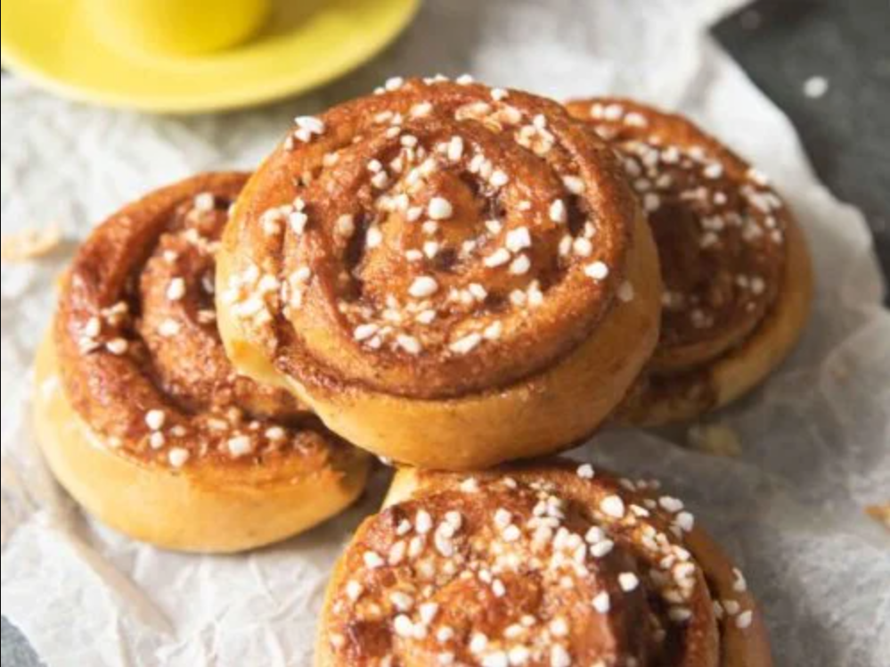

bullar good

decription
best thing you will ever eat
indrediants
bread
- 3 cups of all purpose flour
- warm milk half a cup
- warm water half a cup
- unsalted butter 57g
- surger 2 and half tablespoons
- salt one teaspoon
- yeast 1 teaspoon
filling
- Soft Brown sugar 90g
- Unsalted Butter 57g
- Cinnamon powder 2 tsp
- Cardamom powder 1/2 tsp
glaze
- Water 60ml
- Sugar 5 tbsp
method
- mix the bread thing
- put the filling on
- roll into bullar
- bake at 215 C for 14 to 16 minutes
- mix the galze and put it on afterthey cool down from baking